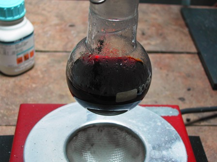
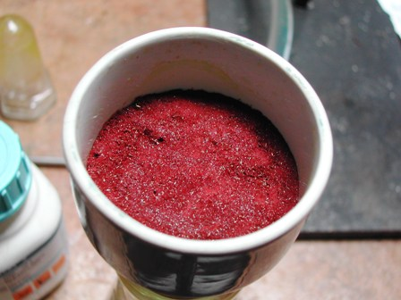
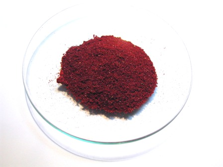

I pochi che seguono questo blog con una certa continuità ricorderanno che tempo fa avevo nitrato il clorobenzene per ottenere il 2,4-dinitroclorobenzene.
La sintesi l'avevo fatta per i soliti due motivi: il primo è fine a se stesso, cioè per creare e vedere una nuova sostanza (e questa "curiosità" costituisce il motore fondamentale di quasi tutti i miei lavori); il secondo era in vista di una sintesi successiva, che è quella della 2,4-dinitrofenilidrazina, la protagonista di oggi.
Questa sostanza è (era) utile in chimica analitica perchè forma derivati insolubili e microcristallini caratteristici (i dinitrofenilidrazoni) con le molecole che contengono un gruppo carbonile (=CO), come le aldeidi ed i chetoni.
Oggi questo reagente (reattivo di Brady) è stato molto vantaggiosamente sostituito da quelli che io chiamo "apparecchi con la spina", i quali però non trovano spazio in questo blog all'antica (dove le spine sono limitate alla lampadina o poco più).
La sintesi è molto facile, secondo la reazione semplificata seguente:

Occorrono i seguenti reagenti:
- 2,4-dinitroclorobenzene Cl-C6H3-(NO2)2
- idrazina solfato H2N=NH2.H2SO4
- potassio acetato CH3-COOK
- etanolo
- Vetreria opportuna
- In una beuta da 100 ml porre 15 ml di acqua e 3,5 gr di idrazina solfato; agitando bene vengono aggiunti 8,5 gr di potassio acetato. La soluzione/sospensione viene portata ad ebollizione per 5 minuti e poi lasciata raffreddare; quando è a circa 70° vengono aggiunti 8 ml di etanolo.

Si filtra la parte solida (solfato di potassio) che viene lavata con altri 8 ml di alcool.
La soluzione di idrazina viene posta in un pallone da 100 ml aggiungendo 5 g di 2,4-dinitroclorobenzene sciolti in 25 ml di etanolo; la soluzione, che assume subito un colore rosso, viene riscaldata a riflusso per un ora.
Dopo raffreddamento si filtra su buchner il prodotto e si lava con 5 ml di alcool e poi con 5 ml di acqua.

La 2,4-dinitrofenilidrazina si presenta sotto forma di cristallini rossi inodori e insolubili in acqua; il p.f. teorico è 197-202°, quello misurato nel mio prodotto 195°.
La resa è stata di 3,1 g, pari a circa il 63%.

Si potrebbe ulteriormente purificare per ricristallizzazione da n-butanolo (circa 30ml per gr).
Anche questo idrazin-derivato è un composto irritante e tossico, da maneggiare con tutte le opportune cautele.
Appena avrò la possibilità (ormai fa un freddo cane nel mio lab... quasi quasi si possono fare le diazotazioni a temperatura ambiente...!) proverò la reazione con le aldeidi ed i chetoni secondo Brady, per concludere fino in fondo questo lavoretto.